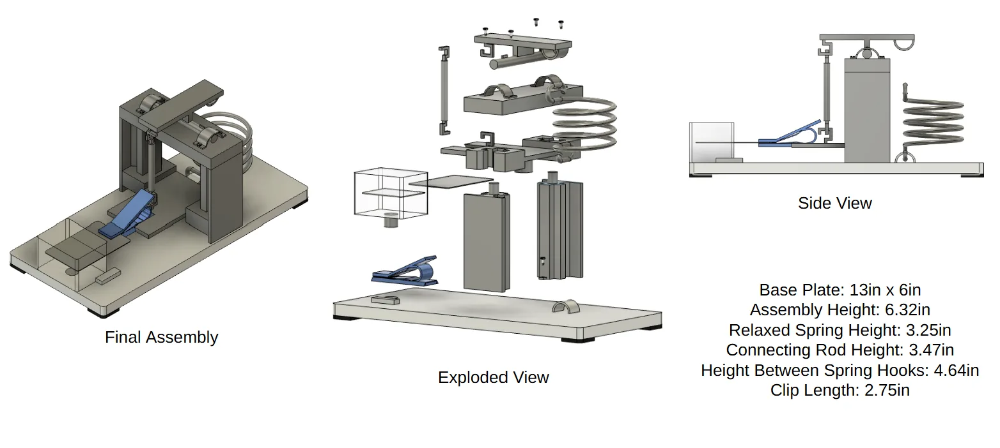

(05) Design challenge · 72 hours
Credit card deformer
A spring-loaded machine, designed from scratch in 72 hours, that recreates how a credit card bends and fails.

The challenge
The prompt was to design, in 72 hours, a machine that reliably reproduces the deformation a credit card goes through in everyday handling, so card designs can be tested for durability. My answer was a compact spring-loaded assembly: an aluminum frame and slider, a PLA clip with rubber tips that grips the card, and a steel spring sized to deliver exactly the force needed to plastically bend it.
Sizing the force
I modeled the card held in the clip as a cantilever beam and worked backward from the material's yield strength to the force the machine must apply:
- Moment: M = F · L, with L = 42.8 mm of card outside the slot.
- Section modulus: S = bh²/6 = (54 mm)(0.8 mm)²/6 ≈ 5.76 mm³.
- Yield: setting M/S = σy = 170 MPa (SS316L) gives F > 22.9 N. Adding the weight of the rod, slider and clip gives F > 25.7 N.
- Spring: k = F/x = 25.7 N / (4.64 in − 3.25 in) = 18.49 N/in, or 7.28 N/cm.
Mechanism & materials
Each part's material was chosen for its job. I also designed against the failure modes most likely to ruin a test: friction losses (handled with coatings and lubricant) and a jamming slider (fixed by refining its geometry so it stays vertical through the stroke).
Beyond the brief
A machine is only useful if it matches real use, so I looked into user studies of how people handle cards to sanity-check the forces. I also proposed material and surface-treatment changes that would make cards more durable in the first place.
Top skills utilized
- Fusion 360
- Beam analysis
- Spring design
- Material selection
- Data-driven design
- Rapid concept development